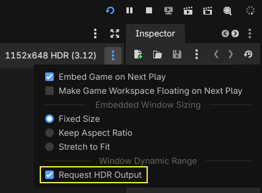
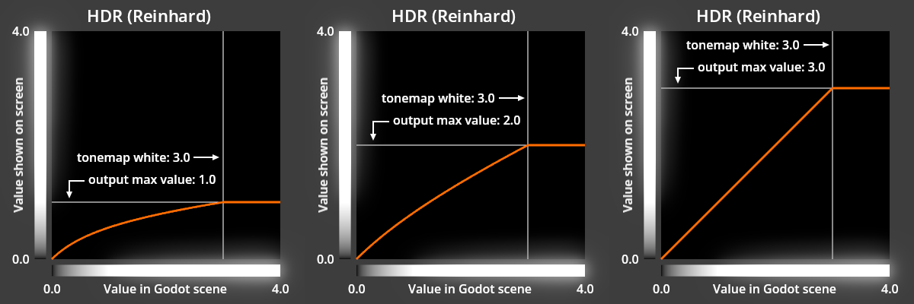

Đầu ra HDR
Đầu ra HDR là tính năng cho phép hiển thị hình ảnh High Dynamic Range (HDR) trên các màn hình hỗ trợ HDR. Không nên nhầm lẫn đầu ra HDR với việc kết xuất HDR nội bộ mà Godot dùng cho cả chế độ đầu ra Standard Dynamic Range (SDR) lẫn HDR.
Đầu ra HDR được hỗ trợ trên iOS, Linux (Wayland), macOS, visionOS và Windows. Nó không được hỗ trợ trên Android, Linux (X11) hoặc web.
Ghi chú
Cả Windows 10 và 11 đều hỗ trợ đầu ra HDR, nhưng chỉ Windows 11 cung cấp ứng dụng có thể dùng để cấu hình độ chói tối đa của màn hình mà trình chỉnh sửa Godot sử dụng.
Trên Linux, các phiên bản GNOME trước 50 có lỗi khiến đầu ra HDR không hoạt động trên Wayland. Nếu đang dùng phiên bản GNOME cũ hơn, bạn cần nâng cấp lên phiên bản 50 trở lên để dùng đầu ra HDR trên Wayland.
Bật đầu ra HDR trong dự án
Bạn có thể bật đầu ra HDR trong bất kỳ dự án mới hoặc hiện có nào bằng các bước sau:
Đảm bảo không có resource Environment nào dùng các tính năng chỉ dành cho SDR:
Tonemap Mode: Filmic hoặc ACES
Glow Blend Mode: Soft Light
Adjustments: Color Correction
Cấu hình cài đặt dự án Renderer thành
mobilehoặcforward_plus.Cấu hình cài đặt dự án nâng cao Rendering Device Driver thành
metalcho iOS vàd3d12cho Windows.Cấu hình cài đặt dự án nâng cao Display Server Driver.linuxbsd thành
waylandvà bật cài đặt trình chỉnh sửa Prefer Wayland.Bật cài đặt dự án HDR 2D và bật use_hdr_2d cho mọi SubViewport và Window cần hỗ trợ đầu ra HDR.
Bật cài đặt dự án Request HDR Output và bật hdr_output_requested cho mọi Window khác cần hỗ trợ đầu ra HDR.
[Tùy chọn] Cung cấp cài đặt HDR trong game bằng cách sao chép ví dụ từ dự án demo đầu ra HDR vào dự án của bạn.
Ghi chú
Một số cài đặt này có thể đã được cấu hình đúng cho đầu ra HDR trong dự án của bạn. Ví dụ, Rendering Device Driver cho Windows được đặt là d3d12 trong các dự án tạo từ Godot 4.6 trở đi, nhưng sẽ cần thay đổi nếu dự án được tạo bằng phiên bản Godot cũ hơn.
Sử dụng đầu ra HDR trong Godot
Hãy thử dự án demo đầu ra HDR như bước đầu tiên để dùng đầu ra HDR trong Godot. Demo này chứa ví dụ cho các khái niệm được mô tả trong trang này và sẽ giúp bạn đảm bảo môi trường phát triển được cấu hình đúng cho đầu ra HDR.
Đầu ra HDR trong trình chỉnh sửa Godot
Trình chỉnh sửa Godot sẽ dùng đầu ra HDR cho cửa sổ chính khi cài đặt dự án Request HDR Output được bật. Bạn có thể biết game đang chạy ở chế độ đầu ra SDR hay HDR dựa vào dòng chữ ở bên phải thanh công cụ game view: game đang chạy ở chế độ HDR khi chữ "HDR" xuất hiện cạnh kích thước cửa sổ.

Con số trong ngoặc đơn cạnh chữ "HDR" là output max linear value hiện tại, được mô tả trong các phần sau. Bạn có thể bật/tắt thuộc tính Window.hdr_output_requested của game trong menu tùy chọn cửa sổ game:

Kiến thức cơ bản về đầu ra HDR
Godot dùng mô hình Extended Dynamic Range (EDR) cho đầu ra HDR. Trong khi đầu ra SDR cho phép hiển thị giá trị thành phần màu từ 0.0 đến 1.0, đầu ra HDR cho phép giá trị cao hơn 1.0. Giá trị tối đa có thể hiển thị được cung cấp bởi Window.get_output_max_linear_value() và phương thức này hợp lệ khi dùng SDR hoặc HDR.

Ghi chú
Các đồ thị này được trình bày dưới dạng ảnh SDR, không chứa màu HDR nào. Để bù cho hạn chế này, các thanh thang xám dọc theo mỗi trục được áp dụng hiệu ứng glow để biểu thị các giá trị nằm ngoài dải SDR. "Output max value" trong đồ thị này biểu thị giá trị thành phần màu tuyến tính tối đa được trả về bởi Window.get_output_max_linear_value().
Thiết kế cho đầu ra HDR
Có hai cách tiếp cận chính để tận dụng tối đa đầu ra HDR: dùng output max linear value và dùng tonemapping.
Dù cả hai cách có thể được dùng trong cùng một dự án, nên dùng tonemapping để tạo đầu ra HDR từ một Viewport có chiếu sáng vượt quá khả năng của màn hình SDR, chiếu sáng gián tiếp, chiếu sáng toàn cục (global illumination), material phát sáng, hiệu ứng hậu xử lý, hoặc bất kỳ kỹ thuật nào khác sử dụng giá trị màu trong scene.
output max linear value chỉ nên được dùng để hiển thị màu trực tiếp lên màn hình mà không qua tonemapping và không ảnh hưởng đến chiếu sáng, hiệu ứng hậu xử lý hay màu xung quanh. Điều này khiến output max linear value rất phù hợp cho CanvasItem hoặc material unshaded trong một scene không có chiếu sáng hoặc chỉ có chiếu sáng cơ bản không vượt quá khả năng của màn hình SDR.
Thuộc tính Viewport.own_world_3d có thể được dùng để tách riêng những Viewport nào chịu ảnh hưởng của tonemapping và các hiệu ứng class_WorldEnvironment khác.
Sử dụng output max linear value
Trong một game truyền thống chỉ có SDR, mức hiển thị sáng nhất của một màu bị giới hạn khi thành phần đỏ, xanh lá hoặc xanh dương của màu đạt tối đa 1.0. Khi dùng màn hình HDR hiện đại, giới hạn này không còn áp dụng và các thành phần màu trên 1.0 có thể được hiển thị chính xác. Godot cung cấp giá trị thành phần màu tối đa mà màn hình có thể hiển thị thông qua output max linear value. Giá trị này có thể dùng trong cả SDR lẫn HDR, giúp bạn dễ dàng xây dựng game cho cả hai chế độ đầu ra mà không cần thay đổi hành vi tùy theo việc đầu ra HDR có được bật hay không.
output max linear value có thể thay đổi thường xuyên khi người chơi điều chỉnh độ sáng thiết bị, bật hoặc tắt đầu ra HDR trên thiết bị, hoặc di chuyển cửa sổ game giữa các màn hình, nên điều quan trọng là phải lấy giá trị này mỗi frame hoặc dùng signal output max linear value changed. Giá trị này luôn bằng 1.0 ở chế độ SDR và cũng có thể bằng 1.0 khi đầu ra HDR được bật và người chơi đã chỉnh màn hình lên độ sáng tối đa.
Tốt nhất nên dùng output max linear value này cho các "điểm sáng nổi bật" và hiệu ứng đặc biệt diễn ra ngắn hoặc chỉ chiếm một phần nhỏ màn hình; nếu phần lớn màn hình được hiển thị ở độ sáng tối đa này quá lâu, game sẽ trông sáng đến khó chịu, như thể game đang bỏ qua cài đặt độ sáng của thiết bị. Bạn cũng có thể thấy một số hiệu ứng trông đẹp nhất khi được giới hạn ở một giá trị tuyến tính tối đa lớn hơn 1.0 nhưng nhỏ hơn output max linear value. Bạn có thể đọc thêm về lý do đôi khi nên giới hạn giá trị HDR tối đa trong bài viết HDR and User Interfaces trên Android Developers Blog.
Việc biến đổi một màu thành sáng nhất mà màn hình có thể hiển thị có thể được thực hiện bằng script. Khi làm việc với class_CanvasItem, có thể tiện lợi khi áp dụng màu đã sửa đổi lên thuộc tính modulate hoặc self_modulate, với màu gốc của class_CanvasItem được đặt là trắng. Script sau minh họa điều này:
extends CanvasItem
# Set this to your desired color when the CanvasItem's base color is white.
@export var sdr_self_modulate: Color = Color.WHITE
# Set this to -1.0 to disable limiting the maximum color value.
@export_range(0, 20, 0.1, "or_less", "or_greater") var max_linear_value_limit: float = -1.0
func _enter_tree() -> void:
var window: Window = get_window()
window.output_max_linear_value_changed.connect(_on_output_max_linear_value_changed)
_on_output_max_linear_value_changed(window.get_output_max_linear_value())
func _exit_tree() -> void:
get_window().output_max_linear_value_changed.disconnect(_on_output_max_linear_value_changed)
func _on_output_max_linear_value_changed(output_max_linear_value: float) -> void:
# Adjust the brightness of color to be the brightest possible, regardless
# of SDR or HDR output, but no brighter than max_linear_value_limit.
if max_linear_value_limit >= 0.0:
output_max_linear_value = minf(output_max_linear_value, max_linear_value_limit)
self_modulate = normalize_color(sdr_self_modulate, output_max_linear_value)
func normalize_color(srgb_color, output_max_linear_value = 1.0):
# Color must be linear-encoded to use math operations.
var linear_color = srgb_color.srgb_to_linear()
var max_rgb_value = maxf(linear_color.r, maxf(linear_color.g, linear_color.b))
var brightness_scale = output_max_linear_value / max_rgb_value
linear_color *= brightness_scale
# Undo changes to the alpha channel, which should not be modified.
linear_color.a = srgb_color.a
# Convert back to nonlinear sRGB encoding, which is required for Color in
# Godot unless stated otherwise.
return linear_color.linear_to_srgb()
Dự án demo đầu ra HDR có các phiên bản nâng cao hơn của script này và ví dụ về cách áp dụng cách tiếp cận này trong dự án của bạn.
Sử dụng tonemapping
Để tạo đầu ra HDR mà không dùng output max linear value, các scene của bạn sẽ cần giá trị màu vượt quá mức màn hình SDR có thể hiển thị, vì vậy điều quan trọng là dùng một tonemapper như Reinhard hoặc AgX để xử lý việc hiển thị các giá trị sáng này trên cả màn hình SDR lẫn HDR.
Tonemapping và HDR
Vai trò chính của tonemapper là thu hẹp dải động của một cảnh tự nhiên có dải độ sáng rất cao về một dải động nhỏ hơn mà màn hình có thể hiển thị. Các tonemapper trong Godot dùng output max linear value để xác định dải đầu ra mà màn hình có thể hiển thị. Ví dụ, với tonemapper Reinhard trong Godot, các giá trị tuyến tính của scene trong khoảng 0.0 đến tonemap white được ánh xạ sang dải đầu ra từ 0.0 đến output max linear value.

Với cách này, bạn có thể điều chỉnh tonemap white để đảm bảo mọi giá trị tuyến tính của scene dưới tonemap white đều được hiển thị mà không bị cắt (clipping). Điều này đảm bảo chi tiết không bị mất khi hiển thị ảnh trên màn hình có dải động thấp hơn cảnh gốc.

Dù hành vi này hoàn toàn ổn định trong SDR, nơi output max linear value cố định ở 1.0, hành vi này lại thay đổi động trong HDR tùy theo khả năng của màn hình:

Như thể hiện trong các đồ thị trên, tonemapper Reinhard sẽ hoạt động giống tonemapper Linear khi output max linear value bằng hoặc cao hơn tonemap white. Điều này cho phép tái tạo màu chính xác trên các màn hình HDR có khả năng tái tạo các giá trị sáng hơn của cảnh gốc. Khi output max linear value tăng lên cao hơn tonemap white, tonemap white sẽ được điều chỉnh để khớp với output max linear value này.
Tonemapper AgX hoạt động tương tự Reinhard về mặt này, nhưng tonemap white của nó luôn được nhân với output max linear value. Tonemapper Linear hoàn toàn không áp dụng tonemapping; tonemap white của nó bằng output max linear value trong mọi trường hợp. Các tonemapper Filmic và ACES hoàn toàn bỏ qua output max linear value và luôn tạo ra ảnh trong dải SDR.
Tại sao không kết hợp output max linear value với các kỹ thuật khác?
Tonemapping, chiếu sáng gián tiếp, chiếu sáng toàn cục và hiệu ứng hậu xử lý đều phụ thuộc vào giá trị màu ổn định của scene để tạo ra kết quả nhất quán và dự đoán được ở cả chế độ SDR lẫn HDR. Nếu nhà phát triển dùng các kỹ thuật này với một scene có giá trị màu thay đổi theo output max linear value, kết quả sẽ không còn tương đồng giữa các màn hình có khả năng khác nhau.
Ví dụ, cường độ của hiệu ứng glow chịu ảnh hưởng trực tiếp từ độ sáng của scene. Nếu độ sáng scene thay đổi theo output max linear value, cường độ glow cũng sẽ thay đổi theo: output max linear value càng lớn sẽ tạo ra hiệu ứng glow càng mạnh, đây thường là hành vi không mong muốn.
Giá trị độ chói tuyệt đối
Khi dùng đầu ra HDR, output max linear value được tính dựa trên độ chói trắng tham chiếu và độ chói tối đa của màn hình.
Độ chói trắng tham chiếu
Độ chói trắng tham chiếu, gọi tắt là độ chói tham chiếu, biểu thị giá trị trắng SDR sáng nhất có thể. Khi người dùng thay đổi cài đặt độ sáng của thiết bị tạo tín hiệu video, chẳng hạn máy tính để bàn, laptop hoặc điện thoại thông minh, họ thực chất chỉ đang điều chỉnh độ chói tham chiếu. Trên điện thoại, thay đổi này có thể diễn ra tự động qua tính năng tự động điều chỉnh độ sáng màn hình, và cũng xảy ra khi người dùng tự chỉnh độ sáng màn hình. Trên máy tính để bàn hoặc laptop, có nhiều cách khác nhau để điều chỉnh độ chói tham chiếu tùy theo hệ điều hành.
Giá trị này thường vào khoảng 100 đến 300 nit và luôn được biểu thị bằng output max linear value đúng bằng 1.0. Giá trị này cũng có thể được gọi là "paper white" hoặc "SDR white level".
Ghi chú
Khi dùng màn hình ngoài trên Windows, cài đặt hiển thị HDR SDR content brightness trực tiếp điều khiển giá trị độ chói tham chiếu và là cách chính để điều chỉnh độ sáng của màn hình desktop Windows và Godot. Khi dùng màn hình HDR tích hợp trên Windows, việc thay đổi HDR content brightness cũng trực tiếp điều khiển độ chói tham chiếu, nhưng không ảnh hưởng đến độ sáng của desktop Windows hay Godot vì một cơ chế điều chỉnh độ sáng riêng sẽ triệt tiêu mọi tác động từ thay đổi độ chói tham chiếu.
Độ chói tối đa
Độ chói tối đa là một thuộc tính của màn hình HDR. Giá trị này có thể nằm trong khoảng từ 250 đến 2.000 nit hoặc cao hơn. Các màn hình ngoài thường báo cáo giá trị độ chói tối đa cao hơn khả năng vật lý thực tế của màn hình, dẫn đến việc màn hình áp dụng tonemapping có thể nhìn thấy được. Một số hệ điều hành máy tính để bàn hoặc laptop cung cấp cách hiệu chỉnh giá trị độ chói tối đa được dùng cho từng màn hình ngoài.
Ghi chú
Khi dùng màn hình tích hợp trên Windows, độ chói tối đa được báo cáo sẽ thay đổi khi người dùng điều chỉnh độ sáng màn hình laptop, trong khi độ chói tham chiếu được báo cáo vẫn giữ nguyên. Hành vi này ngược với khi dùng màn hình ngoài trên Windows và điều chỉnh cài đặt màn hình HDR SDR content brightness, đồng thời cũng ngược với các nền tảng khác.
Giá trị tuyến tính tối đa của đầu ra trong thực tế
Ở chế độ HDR, giá trị tuyến tính tối đa của đầu ra sẽ tăng khi người dùng giảm độ chói tham chiếu, vì có thêm khoảng dư HDR (HDR headroom). Tương tự, khi người dùng tăng độ chói tham chiếu, khoảng dư HDR sẽ ít đi và giá trị tuyến tính tối đa của đầu ra sẽ giảm. Trong một số trường hợp, khi dùng chế độ HDR với độ chói tham chiếu cao nhất, giá trị tuyến tính tối đa của đầu ra sẽ bằng 1.0, giống với hành vi SDR, vì không còn khoảng dư HDR nào.
Không phải màn hình nào cũng như nhau
Các tiêu chuẩn SDR được thiết kế để phù hợp với khả năng của những màn hình phổ biến hiện có trên thế giới. Các tiêu chuẩn HDR lại được viết theo hướng ngược lại một cách có chủ ý: chúng được thiết kế để tận dụng khả năng của một màn hình lý tưởng chưa phổ biến rộng rãi.
Trên thực tế, điều này có nghĩa là các màn hình HDR thông dụng có thể tự thực hiện tonemapping nội bộ, ánh xạ gam màu (gamut mapping) hoặc tonemapping động (DTM) để hỗ trợ nội dung có gam màu và dải độ chói rộng hơn khả năng của phần cứng vật lý. Một số màn hình không thể hiển thị các giá trị màu rất sáng chiếm nhiều hơn một phần nhỏ (1% đến 10%) diện tích màn hình, và sẽ tạm thời làm tối toàn bộ hoặc một phần hình ảnh khi điều này xảy ra. Các tính năng này có thể tạo ra màu sắc không đại diện cho các màn hình khác, vì vậy tốt nhất bạn nên tắt chúng (nếu có thể) khi phát triển game HDR. Bạn có thể tắt một phần hoặc toàn bộ các tính năng này bằng cách bật chế độ HGiG trên màn hình hoặc đặt chế độ màn hình thành "clip" và/hoặc "stable". Một số màn hình HDR có thể hiển thị màu tối hoặc màu bão hòa khác với các màn hình khác; sự khác biệt này thường là do công nghệ màn hình.